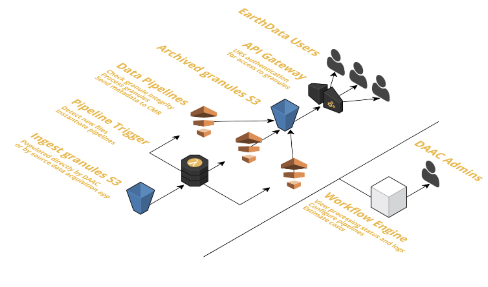
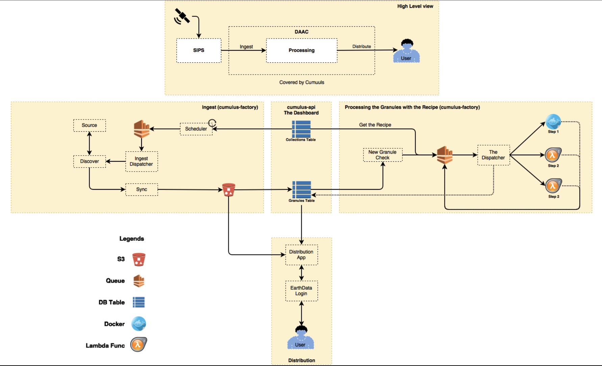
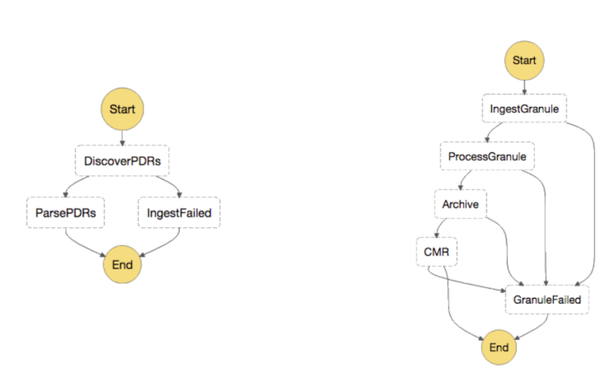

Cumulus: Serverless Geoprocess for NASA
JS GEO August 2017
Matthew Hanson @ Development Seed
I.Background
“Advance knowledge of Earth as a system to meet the challenges of environmental change, and to improve life on our planet”
Since 1994, the Earth Science Data System Program has committed to the full and open sharing of Earth science data obtained from NASA instruments to all users.
II.Cumulus
Goal
Design and develop a functional "light weight" data ingest, archive, and distribution “cloud native” framework
- Tasks Repository: Lambda or ECS, common input and output payload
- Orchestration engine: invokes Tasks, controls scaling and error handling
- Database: stores task status, logs, and other system state information
- Recipe(s) or Configuration file(s): define the ingest, processing, publication, and archive operations
- Dashboard: create and execute recipes; check the status of executions, track errors, etc.



Thank you